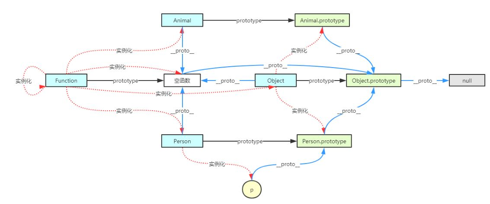

javascript基础
javaScript组成
- ECMAScript：一种语法规范，它定义了脚本语言在语法和语义上的标准。
- DOM：浏览器对象模型
- BOM：文档对象模型
js的书写格式
- 行内式
- 嵌入式
- 外联式
变量
- var关键字声明变量
var age; - 变量的赋值
var age = 80; - 同时声明多个变量
var age,name,gender; age = 18; name = 'wolf'; gender = '男'； - 同时声明多个变量并赋值
var age = 18,name = 'wolf'; - 变量的命名规则和规范：由字母、数字、下划线、$符号组成，不能以数字开头； 不能是关键字和保留字，例如：var、if、for、enum； 区分大小写； 变量要具有意义，驼峰命名法；
数据类型
JS数据类型
数据类型一共7（6种基本类型+1种引用类型）种
- 栈: (原始数据) string/number/boolean/null/undefined/symbol
- 堆: (引用数据类型)object（array和函数属于object）
基本数据类型
- 在进行算数运算时，八进制和十六进制的运算结果都会被转换成十进制数值
- 十进制：var num = 9;
- 十六进制：var num = 0xA （数字序列范围：0~9和A~F）
- 八进制：
var num1=07；对应十进制的7
var num2=019；对应十进制的19
var num3=08；对应十进制的8
（数字序列范围：0~7）；如果字面值中的数值超出了范围，那么前缀0将被忽略，0后面的数值将被当作十进制数值解析；除非需要进行八进制转换，否则绝不要在数字前面写0！
- 浮点数
- 科学计数法
- var n1 = 8e+123; //8乘以10的123次方
- var n2 = 8e-123; //8乘以10的-123次方
浮点数值的最高精度是 17 位小数，但是浮点运算并不总是 100% 准确，可在控制台调试 1-0.9
var x = 0.2+0.1; // 输出结果为不是0.3，而是0.30000000000000004
可以通过扩大相应的倍数来计算 console.log(0.07 * 100);不要轻易判断两个浮点数是否相等
- 数值范围
- 最小值：Number.MIN_VALUE，这个值为： 5e-324
- 最大值：Number.MAX_VALUE，这个值为： 1.7976931348623157e+308
- 无穷大：Infinity
- 无穷小：-Infinity
- 数值判断
- NaN：Not a Number => 例如：5*'abc'；NaN 与任何值都不相等，包括他本身
- isNaN：is not a number => isNaN('abc'); 与isNaN相等
- 字符串表示“串在一起”的字符，在代码中使用英文字符的引号(单引号/双引号)引起来的内容就是字符串的内容。
-
输出
我还想再活"五百年"===》var str1='我还想再活"五百年"'
我在"叩丁狼'挖矿'"===》var str2='我在"叩丁狼＼'挖矿＼'"'
常用转义字符：\' 代表一个单引号（撇号）字符，例如：'你好，\'world\''
\" 代表一个双引号字符
\n 换行
- 使用length属性获取字符串的长度；console.log(str.length);
- 字符串拼接，使用'+'号连接字符串
- 若"+"号任意一边存在字符串，则连接结果为字符串。
- 若"+"号两边都是数字，则连接结果为数字计算后的结果。
Boolean（布尔）
字面量：true和false，区分大小写；计算机内部存储：true为1，false为0
Null（空）
Null类型只有一个值null。表示一个空，JavaScript中只有给变量赋值为null时，变量才为null，否则永远不为null。
Underfined（未定义）
Undefined类型只有一个值undefined。声明了但未赋值的变量，默认值为undefined，表示没有被赋值。
ES6中引入了一种新的基础数据类型：Symbol
每个从Symbol()返回的symbol值都是唯一的。一个symbol值能作为对象属性的标识符；这是该数据类型仅有的目的。
const symbol1 = Symbol();
const symbol2 = Symbol(42);
const symbol3 = Symbol('foo');
console.log(typeof symbol1);
// expected output: "symbol"
console.log(symbol3.toString());
// expected output: "Symbol(foo)"
console.log(Symbol('foo') === Symbol('foo'));
// expected output: false调用Symbol()函数时传入一个可选的字符串参数，相当于给创建的Symbol实例一个描述信息
在使用Symbol来作为对象属性名时，Symbol类型的key是不能通过Object.keys()或者for...in来枚举的，Object.getOwnPropertyNames() 也不会返回 symbol 对象的属性，同样当使用JSON.stringify()将对象转换成JSON字符串的时候，Symbol属性也会被排除在输出内容之外；但是可以通过 Object.getOwnPropertySymbols() 得到
变量的类型
-
浏览器控制台输出的
- 字符串的颜色是黑色的
- 数值类型是蓝色的
- 布尔类型也是蓝色的
- undefined和null是灰色的。
注意
- typeof 检测基本数据类型,特例: null返回object。
- typeof 检测复合数据类型,返回结果基本上都是object,函数除外。
- 当变量被申明但还未初始化时，默认值为undefined，此时temp的类型为"undefined"（字符串）。
- 为什么 typeof 运算符对于 null 值会返回 "object"。这实际上是 JavaScript 最初实现中的一个错误，然后被 ECMAScript 沿用了。现在，null 被认为是对象的占位符，从而解释了这一矛盾，但从技术上来说，它仍然是原始值。
- 复杂的数据类型使用typeof获取到的类型，除函数为"function"外，其他的都是"object"。
- null可以用来消除变量对对象的引用，从而让垃圾回收器回收对应的内存。
//obj引用创建好的Object对象 //如果Object对象有被引用，那么就不会被回收，一直存在于内存中 var obj = new Object(); //obj不再对Object对象继续引用，那么该对象会在特定的时间点被回收 obj = null;
数据类型转换
- toString()：开发中常用（首选）
- String()
有了toString()函数，为什么还要有String()函数？ 某些类型没有toString()函数，这个时候可以使用String()。例如：undefined和null，可以写成String(undefined)和String(null)。
- 拼接字符串方式
console.log(123 + ''); console.log(true + ''); console.log(undefined + ''); console.log(null + '');num + "" 的形式，当 "+" 号一边的操作符是字符串类型，另一边的操作符是其它类型的时候，会先把其它类型转换成字符串再进行字符串拼接，最后返回字符串。
- 其他类型转成数值类型的时候，存在有两种可能的值，一种是数字，一种是NaN（NaN也是Number类型！）。
- Number()
var num01 = '18'; console.log(Number(num01)); var num02 = '18aaa'; console.log(Number(num02));//NaN: Not a Number - parselnt()
如果第一个字符是数值或运算符号，那么就开始解析，直到遇到非数值字符，停止解析返回整数；如果第一个字符是非数值或非运算符号，则不解析并且返回NaN。
//使用parseInt()函数 console.log(parseInt(str));//123 number var str1 = '123aaa';//123 number var str2 = 'aaa123';//NaN var str3 = '12.3aaa'; console.log(parseInt(str3));//12 console.log(parseInt(bool));//NaN console.log(parseInt(u));//NaN console.log(parseInt(nu));//NaN - parseFloat()
parseFloat()把字符串转换成浮点数 parseFloat()和parseInt非常相似，不同之处在于parseFloat会解析第一个小数点，遇到第二个小数点或者非数字字符时就结束,如果解析的内容里只有整数，则解析成整数
var str01 = '3.14'; var str02 = '3.14aa'; var str03 = '3.14.314'; console.log(parseFloat(str01));//3.14 console.log(parseFloat(str02));//3.14 console.log(parseFloat(str03));//3.14 - +，-0运算
加号和减号放在变量前，分别是取正、取负的效果；
变量减去0，默认先将变量转换成数值类型，再做减法运算，变量加上0，则按照字符串拼接的规则运算。
var strNum = '18.6'; console.log(+strNum); //18.6 取正 console.log(-strNum); //-18.6 取负 console.log(strNum - 0); //18.6 strNum先转换成数值类型，再做减法运算 console.log(strNum + 0); //18.60 0先转换成字符串类型，再做拼接
如果布尔对象无初始值或者其值为: 0（包括 0、-0）、null、""（空字符串）、undefined、NaN时，那么转换成布尔类型之后的值为 false。否则，其值为 true。
隐式转换
隐式转换是系统默认的，不需要加以声明就可以进行的转换。一般情况下，数据的类型转换通常是由编译系统自动进行的，不需要人工干预
- 对象和布尔值比较 : 对象和布尔值比较时，对象先转换为字符串，然后再转换为数字，布尔值直接转换为数字
- 对象和字符串比较 : 对象和字符串进行比较时，对象转换为字符串，然后两者进行比较
- 对象和数字比较 : 对象和数字进行比较时，字符串转换为数字，二者再比较
- 字符串和数字比较 : 字符串和数字进行比较时，字符串转换成数字，二者再比较，true=1，false=0
- 字符串和布尔值比较 : 字符串和布尔值进行比较时，二者全部转换成数值再比较
- 布尔值和数字比较 : 布尔值和数字进行比较时，布尔转换为数字，二者比较
基本数据与引用数据的区别
基本类型又叫值类型(简单类型),引用类型又叫复杂类型。
- 基本数据类型：值类型（简单数据类型），在存储时，变量中存储的是值本身，因此叫做值类型。
- 引用类型：复杂数据类型，在存储时，变量中存储的仅仅是地址（引用），因此叫做引用数据类型。
- 堆栈空间分配区别：
- 栈（操作系统）：由操作系统自动分配释放 ，存放函数的参数值，局部变量的值等。其操作方式类似于数据结构中的栈；
- 堆（操作系统）： 存储引用类型(对象)，一般由程序员分配释放， 若程序员不释放，由垃圾回收机制回收，分配方式类似于链表。
类型检查四种方式
代码console.log(typeof "abc");//"string"
console.log(typeof 123);//"number"
console.log(typeof true);//"boolean"
console.log(typeof null);//"object"
console.log(typeof Function);//"function"
console.log(typeof {name:"Neld", age: 10});//"object"对于字符串，数字和布尔类型，返回对应类型的字符串（string, number, boolean），undefined和Function 比较特殊，分别是undefined和function，这两个需要单独记忆，其他的（包括null）都是返回object
function Person() {}
function Dog() {}
var p = new Person();
var d = new Dog();
console.log(p.constructor == Person);//true
console.log(d.constru+ ctor == Dog);//truefunction Person() {}
function Dog() {}
var p = new Person();
var d = new Dog();
console.log(p instanceof Person);//true
console.log(d instanceof Dog);//true
console.log(p instanceof Object);//true
console.log(d instanceof Object);//truePerson和Object的原型对象分别在p和b对象的原型链上，所以上面的返回值都是true
console.log(Object.prototype.toString.call("Neld"));//[object String]
console.log(Object.prototype.toString.call(10));//[object Number]
console.log(Object.prototype.toString.call(p));//[object Object]
console.log(Object.prototype.toString.call([]));//[object Array]运算符
- 前置++：先执行运算（自身加1）后 返回表达式的值
- 后置++： 先返回表达式的值，后执行运算（自身加1）
- &&： 逻辑与，两个操作数同时为true，结果为true，否则结果都是false
- ||： 逻辑或，两个操作数有一个为true，结果为true，否则为false
- ! ：非 取反
-
&& 两边是其他类型时，会先发生隐式转换，转换成布尔类型。
如果左操作数转换成的布尔类型，是true，则返回右操作数本身（注意：不是返回布尔类型）
如果左操作数转换成的布尔类型，是false，则返回左操作数本身（注意：不是返回布尔类型）
-
|| 两边是其他类型时，会先发生隐式转换，转换成布尔类型。
如果左操作数转换成的布尔类型，是true，则返回左操作数本身（注意：不是返回布尔类型）
如果左操作数转换成的布尔类型，是false，则返回右操作数本身（注意：不是返回布尔类型）
- <：小于
- >：大于
- >=：大于等于
- <= ：小于等于
- ==：等于
- !=：不等于
- === ：全等于
- !== ：全不等于 ==只进行值的比较，值相同则返回true，===会进行类型和值的比较，两者都相同，则返回true，否则返回false
- 赋值： =
- 加赋值： +=
- 减赋值： -=
- 乘赋值： *=
- 除赋值： /=
- 求余赋值： %=
- () 优先级最高
- 一元运算符 ++ -- !
- 算术运算符 先* / % 后 + -
- 关系运算符（比较大小） > >= < <=
- 相等运算符（比较相等） == != === !==
- 逻辑运算符 先&& 后||
- 赋值运算符 = += -= *= /= %=
注意
console.log(null == undefined);//true (特例);
console.log(null === undefined);//false
Null类型只有一个值null，由于undefined是从null派生而来，因此ECMAScript把他们定义为相等。但并不全等。
var sNum = "66" ; var iNum = 66 ; console.log(sNum != iNum); //输出 "false" console.log(sNum !== iNum); //输出 "true"- 即使两个数都是 NaN，等号仍然返回 false，因为根据规则，NaN 不等于 NaN。
if、switch语句
if（条件表达式）{ 分支体 }if（条件表达式）{ 分支体 } else { 分支体 }if（条件表达式）{ 分支体 }else if（条件表达式2）{ 分支体 }else if（条件表达式3）{ 分支体 }else{ 最后默认分支体 }- 三元运算符
if......else语句的一种简化写法；表达式1？表达式2：表达式3
三元运算符中的操作数是一个表达式的运算结果，该结果是布尔类型，运算过程为：如果表达式1结果为true，则返回表达式2的结果；否则（表达式1结果为false）返回表达式3的结果。三元运算符又称三目运算符。
布尔类型的隐式转换
流程控制语句会把括号中的表达式的值会隐式（自动）转换成布尔类型。除了流程控制语句的表达式，一元运算符 "!" 也会将值隐式转换成布尔类型。
五种特例：0，''，NaN，undefined，null，转换成布尔类型的结果都是false。
循环结构
while（循环条件）{
循环体
}do..while循环和while循环非常像，二者经常可以相互替代，但是do..while的特点是不管条件成不成立，do循环体都会先执行一次。
do{
循环体
}while（循环条件）；
do{
var inStr = prompt('可不可以，和你在一起？', '永远在一起！(可以/不可以)');
console.log(inStr);
}while (inStr != '可以');
alert('我们就别再分离!');for语句
for（初始化表达式1；判断表达式2；自增表达式3）{
循环体4
}
/*执行顺序：1243---243----243（直到判断表示式返回false）
1.初始化表达式
2.判断表达式
3.自增表达式
4.循环体*/
var num=1;
for (;num<=100;){
console.log(num);
num++
}continue和break
- break：终止，中断。立即跳出整个循环（注意：如果是多层循环，则跳出当前层循环），即循环结束，开始执行循环后面的内容（直接跳到大括号）
- continue：立即跳出当前（本次）循环，继续下一次循环（跳出i++的地方）
函数
函数也是一种数据类型,函数可以作为一个函数的参数，在另一个函数中调用。函数也可以作为返回值从函数内部返回。
- 声明函数： function 函数名（）{ //函数体 }
- 函数表达式 var fn=function（）{ //函数体 }
- 函数的调用 ： 函数名（）;
- 函数的参数：function 函数名（形参1，形参2，形参...）{ //函数体 }
函数名（实参1，实参2，实参3）;
函数的返回值
- 如果函数没有显示的使用 return语句 ，那么函数有默认的返回值：undefined
- 如果函数使用 return语句，那么跟再return后面的值，就成了函数的返回值
- 如果函数使用 return语句，但是return后面没有任何值，那么函数的返回值也是：undefined
- 函数使用return语句后，这个函数会在执行完 return 语句之后停止并立即退出，也就是说return后面的所有其他代码都不会再执行。
arguments
JavaScript中，arguments是一个类似数组的对象，arguments对象作为当前函数的一个内置属性，也就是说所有函数都内置了一个arguments对象，arguments对象中存储了外部传递给函数的所有的实参。arguments是一个伪数组（具有数据的部分属性），因此其可以进行遍历。
代码匿名函数
- 匿名函数的使用：将匿名函数赋值给一个变量，这样就可以通过变量进行调用 : var fn = function() { // 函数体 }
调用匿名函数：fn ( ) ;
- 自调用函数：
全局变量和局部变量
- 局部变量退出作用域之后会销毁，全局变量关闭网页或浏览器才会销毁
- 全局变量：在任何地方都可以访问到的变量就是全局变量，对应全局作用域（不使用var声明的变量是全局变量，不推荐使用。）
- 局部变量：只在固定的代码片段内可访问到的变量，最常见的例如函数内部。对应局部作用域(函数作用域)
Function构造函数创建对象
var fun2 = new Function("console.log('hello h5');");
fun2();//hello h5直接将函数体的代码以字符串的形式传递给Function构造函数，这样就可以创建一个有函数体的函数对象了。
如果函数体中有多行代码也是一样的方式，将其放在一个字符串中传递即可。
var fun2 = new Function("console.log('hello h5');console.log('hello java');");
fun2();//hello h5定义一个带有参数的函数对象:
var fun2 = new Function("a", "b", "return a + b;");
console.log(fun2(1, 2));//3将Function中的最后一个参数作为函数体，前面的都是函数的形参。
闭包
由于在js中，变量到的作用域属于函数作用域，在函数执行后作用域会被清除、内存也会随之被回收，但是由于闭包是建立在一个函数内部的子函数，由于其可访问上级作用域的原因，即使上级函数执行完，作用域也不会随之销毁，这时的子函数---也就是闭包，便拥有了访问上级作用域中的变量权限，即使上级函数执行完后，作用域内的值也不会被销毁。在本质上，闭包就是将函数内部和函数外部连接起来的一座桥梁。但由于闭包打破了函数作用域的束缚，导致里面的数据无法清除销毁，当数据过大时会导致数据溢出。
预解析
- 把变量的声明提升到当前作用域的最前面，只会提升声明，不会提升赋值。
- 把函数的声明提升到当前作用域的最前面，只会提升声明，不会提升调用。
- 变量和变量同名，解析之后只存在一个当前变量的声明
- 函数和函数同名，后面的声明将前面的覆盖
- 函数和变量同名，函数声明提升，忽略变量的声明
- 如果是命名函数，则只将前面的变量声明提升，函数不动。
- 函数的if语句中,不管条件是否成立，都要进行变量提升
- 有行参的函数中,有形参赋值了，就不在走变量提升了
关键字
new关键字
- new在调用构造函数中所执行的步骤:
- new会在内存中创建一个新的空对象, var obj = new object();
- new会让this指向这个新的对象, this = obj ;
- 给这个新对象加属性和方法,这也是执行构造函数目的
- 返回这个新对象,return this;
this关键字
- 函数在定义的时候this是不确定的，只有在调用的时候才可以确定
- 一般函数直接执行，内部this指向全局window
- 函数作为一个对象的方法，被该对象所调用，那么this指向的是该对象
- 如果是某标签触发什么事件,调用了这个函数,this指向标签(整个DOM节点,包含它的子元素);
- 如果函数使用了call/apply,this是作为参数传入对象
- 构造函数中的this其实是一个隐式对象，类似一个初始化的模型，所有方法和属性都挂载到了这个隐式对象身上，后续通过new关键字来调用，从而实现对象的创建
- setInterval和setTimeout的回调函数中this的指向都是window。这是因为JS的定时器方法是定义在window下的。
对象
object是Javascript中所有对象的父对象
访问对象的成员：
- 在方法中使用属性：this.name，this表示当前（正在调用该方法的）对象
- 访问属性的格式：对象名.属性名; dog.name;
- 访问方法的格式：对象名.方法名(); dog.bark();
- 访问属性的另一种方式：对象名["属性名"] dog["name"];
删除对象的属性
delete关键字 : delete obj.name;
创建对象
var temp = {name:"zs",age:10};
var obj = Object.create(temp);//创建传递进来的对象，并设置该对象的原型对象为当前的参数
console.log(obj);
//可以添加null
var o = Object.create(null);
//console.log(o);
o.name ="老王";
console.log(o);遍历对象
通过for...in语法可以遍历一个对象。格式: for(var key in obj){ } : obj是要遍历的对象。key是从obj对象中遍历出的属性名
内置对象
- Object
- String
- Number
- Boolean
- Function
- Array
- Date
- RegExp
- Error
Object
Object原型对象成员
- valueOf:
- 基本包装类型：返回对应的值
- 引用类型：返回this，对象本身
- 日期类型：返回时间戳
var str = new String("demo"); var obj ={name:"zs"}; var date =new Date(); console.log(str.valueOf());//demo console.log(obj.valueOf());//{name:"zs"} console.log(date.valueOf());//时间戳 - toString : 返回数据特定的格式的字符串
- 基本类型：返回对应值的字符串
- 如果是数字类型，可以传递一个参数指定转换成上面进制的数字字符串
- 引用类型：返回[object Object]格式的字符串，object为对象的类型，Object为对象对应的构造函数
Array.isArray()方法是ES5中提供的方法，所以，如果使用低版本的ES，就不能直接使用该方法，解决版本兼容问题:
function isArray(arr) {
if(Array.isArray){
return Array.isArray(arr);
}else{
return Object.prototype.toString.call(arr) == "[object Array]";
}
}toLocaleString：和toString方法类似，可以将日期转换成本地格式的数据
var d = new Date();
console.log(d.toLocaleString());//2019/3/10 下午4:23:54Object静态成员
- Object.getOwnPropertyNames()
该方法返回一个由指定对象的所有自身属性的属性名（包括不可枚举属性但不包括Symbol值作为名称的属性）组成的数组。该方法不会获取到原型链上的属性。
在 ES2015 中，非对象参数被强制转换为对象 。
Object.getOwnPropertyNames('foo'); // ['length', '0', '1', '2'] (ES2015 code) - getOwnPropertyDescriptor：获取当前对象中的指定的属性描述对象
console.log(Object.getOwnPropertyDescriptor(obj,"name"));- 每个属性描述对象都存在下面四个属性：
- configurable：属性可配置型，false，当前属性不能被删除，并且后面不能再改变该描述对象
- enumerable：可枚举性，false，当前属性不是被循环遍历到
- value：当前属性的值
- writable：可写性，false，当前属性的值不能被修改
- getOwnPropertyDescriptors：获取所有属性的描述对象
- defineProperties ： 一次定义多个属性的可操作性（configurable|enumerable|value|writable）
- defineProperty：定义当前指定属性的可操作性（configurable|enumerable|value|writable）
当为一个存在的属性设置可操作性时，如果只是修改属性描述对象的部分属性，其他的为默认值。
当为一个不存在的属性设置可操作性时，如果只是修改属性描述对象的部分属性，其他的为false。利用Object.defineProperty进行数据劫持
访问器属性提供了getter和setter方法。- getter ： 获取时，改为获取函数里return的值
- sette ： 修改设置时，改为用函数体里的方法修改
- keys：获取当前对象所有属性的名称，不可枚举的属性除外
console.log(Object.keys(obj)); - getOwnPropertyNames：获取当前对象所有属性的名称，包括不可枚举的属性
console.log(Object.getOwnPropertyNames(obj));
Math
- nMath.E ： 欧拉常数e（基数）
- Math.PI ： 圆周率
- Math.random() ： 生成随机数[0,1)
- Math.floor()/Math.ceil() ： 向下取整/向上取整
- Math.round() ： 四舍五入取整
- Math.max()/Math.min() ： 取最大和最小值
- Math.abs() ： 绝对值
- Math.sin()/Math.cos() ： 正弦/余弦
- Math.power()/Math.sqrt() ： 求指数次幂/求平方根
Date
Date 对象基于1970年1月1日（世界标准时间）起的毫秒数。
- 几种Date对象的创建方式
- var date = new Date() ： 获取当前时间
- 获取日期的毫秒
- console.log(date.valueOf());
- console.log(date.getTime());
- console.log(+date);
- new Date(value) ： var date2 = new Date(156448658459);
- new Date(dateString) : var date3 = new Date('2018-5-6 9:2:30');
- new Date(year, monthIndex [, day [, hours [, minutes [, seconds [, milliseconds]]]]]) : var date4 = new Date(2017,6,4,5,8,9,);
- var date = new Date() ： 获取当前时间
- 获取指定部分日期
- console.log(date.getSeconds()) : // getSeconds() 根据本地时间，返回一个指定的日期对象的秒数。 0-59
- console.log(date.getMinutes()) : // getMinutes() 根据本地时间，返回一个指定的日期对象的分钟数。 0-59
- console.log(date.getHours()) : // getHours() 根据本地时间，返回一个指定的日期对象的小时数 0-23
- console.log(date.getDay()) : // getDay() 返回星期几 0周日 6周6
- console.log(date.getDate()) : // getDate() 返回当前月的第几天
- console.log(date.getMonth()) : // getMonth() 返回月份，***从0开始***
- console.log(date.getFullYear()) : // getFullYear() 返回4位的年份 如 2019
Array
- 获取数组元素：数组名[下标] 下标又称索引，获取数组对应下标的那个值，如果下标不存在，则返回undefined。
- 获取数组的长度：console.log(数组名.length)
- 获取数组的最后一项：console.log（数组名[数组名.length-1]）;
- 从数组的最后一项的下一个位置开始加入新元素
for (var i = 0; i < 5; i++) { names[names.length] = i+''; } console.log(names);
- 遍历数组
- 正向遍历数组，访问数组的每一个元素。
for（var i = 0；i < array.length；i++）{ console.log（array[i]）; } - 逆向遍历数组
for（var i = array.length - 1;i>=0;i--）{ console.log(array[i]); }
- 正向遍历数组，访问数组的每一个元素。
- 数组中新增元素：数组名[下标/索引] = 值
创建数组对象
创建数组对象 : var 对象名称 = new Array(数组元素或长度)- 使用构造函数创建对象，此处使用的是数组的构造函数 : var array = new Array(3,2,1);
- 当仅有一个参数为数字时，构造函数将返回一个 `length` 的值等于指定数组长度 `arrayLength` 的数组对象（言外之意就是该数组此时并没有包含任何实际的元素，不能理所当然地认为它包含 `arrayLength` 个值为 `undefined` 的元素） var array1 = new Array(5); (创建一个长度为5的空数组)
判断一个变量是数组类型
arr instanceof Array; //true
typeof arr; //object typeof是无法判断是否为数组的内置对象Array原型对象成员
- toString() : // 把数组转换成字符串返回，返回字符串中使用逗号分隔每一项
- valueOf() : // 返回数组对象本身
- push() : // 将一个或多个元素添加到数组的末尾，并返回该数组的新长度
- pop() : // 从数组中删除最后一个元素，并返回该元素的值
- shift() : // 取出数组中的第一个元素，修改length属性,返回被删除的元素
- unshift() : // 在数组最前面插入项，返回数组的长度
- reverse() : // 将数组中元素的位置颠倒,返回反转后的数组。该方法会改变原数组。
- sort() : // 即使是数组sort也是根据字符，从小到大排序
数组调用sort()进行排序的时候，底层会先调用toString()将数组转换成字符串，然后再按ASCII进行比较。这种比较方式，会将数值数组转换成字符串，这时就会出现不合理的效果，比如“80”排在“9”的前面。如果想对数值进行排序，我们要使用带参数的sort方法。
代码带参数的sort方法模拟sort方法内部实现实现数组的随机排序 - concat() : // 用于合并两个或多个数组。此方法不会更改现有数组，而是返回一个新数组。var new_array = old_array.concat(value1[, value2[, ...[, valueN]]]) ； valueN可取数组或值
- slice() : // 返回一个从开始到结束(不包括结束)选择的数组的一部分进行浅拷贝到一个新的数组对象,并且原对象不会被修改，参数start如果未定义则从0开始,参数end如果未定义则从1开始
slice也可以调用方法将类似Array的对象/集合(阵列状物体)转换为新的Array。
代码 - splice() : // 删除或替换或增加当前数组的某些项，参数start(开始的索引位置), deleteCount(删除数量，写0则为增加), options(要替换的项目)
- indexOf() : // 返回指定元素的索引，如果没找到返回-1
代码 - lastIndexOf() : // 返回指定元素在数组中的最后一个的索引，如果没找到返回-1
- every() : // 方法测试数组的所有元素是否都通过了指定函数的测试。
- filter() : // 创建一个新数组, 其包含通过所提供函数实现的测试的所有元素。
var newArray = arr.filter(callback(element,index,array),thisArg[可不写]) //callback最少要写一个参数 thisArg：执行 callback 时，用于 this 的值。 - forEach() : // 对数组的每个元素执行一次提供的函数
- some() : // 测试是否至少有一个元素通过由提供的函数实现的测试
- map() : // 创建一个新数组，其结果是该数组中的每个元素都调用一个提供的函数后返回的结果
var new_array = arr.map(function callback(element, index, array) { //callback最少要写一个参数 // Return element for new_array }, thisArg) thisArg：执行 callback 时，用于 this 的值。 - join() : // 方法将数组的所有元素连接到一个字符串中,默认使用“，”分割。
- reduce():// arr.reduce(callback,[initialValue]) ：
对数组中的每个元素执行一个由您提供的reducer函数(升序执行)，将其结果汇总为单个返回值。
initialValue可加可不加，如果加了，acc取值为initialValue，cur取数组中的第一个值（即索引为0的值）；如果没有提供 initialValue，那么acc取数组中的第一个值（索引为0的值），cur取数组中的第二个值（索引为1的值）。
- reducer 里的函数接收4个参数(最少要有前两个参数):
- Accumulator (acc) (累计器)
- Current Value (cur) (当前值)
- Current Index (idx) (当前索引)
- Source Array (src) (源数组)
- includes() : 方法用来判断一个数组是否包含一个指定的值，根据情况，如果包含则返回 true，否则返回false。
arr.includes(valueToFind[, fromIndex])
- valueToFind : 需要查找的元素值。
- fromIndex(可选) : 从fromIndex 索引处开始查找 valueToFind。如果为负值，则按升序从 array.length + fromIndex 的索引开始搜 （即使从末尾开始往前跳 fromIndex 的绝对值个索引，然后往后搜寻）。默认为 0。
string
基本包装类型
//简单类型（基本类型），没有属性和方法
//复制类型（引用类型），有属性和方法
var s = 'abc';
var num = s.length;
console.log(num);
//以上代码执行过程如下：
var s1 = new String('abc');
var s2 = s1.length;
s1 = null;基本类型在调用属性或方法时，会先被包装成对应的基本包装类型(复杂类型)，即创建一个临时的基本包装类型对象，再去调用属性或方法，方法执行完毕之后，自动销毁临时对象。
为了方便操作基本数据类型，JavaScript中提供了三种基本包装类型：String、Number、Boolean。实际开发中，我们基本不使用Number、Boolean包装类型，因为：1. 这种类型中很少有我们用到的方法；2. 使用Boolean类型容易引起歧义。
string对象
- charAt() ： // 获取指定位置处字符
- charCodeAt() // 获取指定位置处字符的ASCII码
- str[0] ： // HTML5，IE8+支持 和charAt()等效
- concat() ： // 拼接字符串，等效于+，+更常用
- slice() ： // 从start位置开始，截取到end位置，end取不到
- substring() ： // 从start位置开始，截取到end位置，end取不到
- substr(start, length) ： // 从start位置开始，截取length个字符,如果忽略 length，则 substr 提取字符，直到字符串末尾。
- indexOf() ： // 返回指定内容在原字符串中的位置
- lastIndexOf() ： // 从后往前找，只找第一个匹配的
- trim() ： // 只能去除字符串前后的空白
- to(Locale)UpperCase() ： // 转换大写
- to(Locale)LowerCase() ： // 转换小写
- search() ： // 执行正则表达式和对象之间的一个搜索匹配。如果匹配成功，则 search() 返回正则表达式在字符串中首次匹配项的索引;否则，返回 -1。
- replace() ： // 替换
代码
- split() ： // 根据指定的字符切割字符串,返回字符串数组。
代码
- fromCharCode() ： // String.fromCharCode(101, 102, 103); 把ASCII码转换成字符串
案例
代码基本包装类型对象的创建
代码Number类型扩展注意点
Number.prototype.add = function (num) {
return this + num;
}
var num = 100;
var ret = num.add(100);//
console.log(ret);//200
console.log((100).add(100));//200//数值加括号变成表达式原型
constructor属性
使用constructor属性可以获取到创建对象使用的构造器函数对象，所以我们可以通过判断构造器的类型来得知创建的对象的类型。
原型特点
原型的两大特点：共享数据、继承
- 总结三句话：
- 每一个构造函数都有一个默认的prorotype属性，指向他自己的原型对象
- 每一个实例化对象都有一个__proto__属性，指向他所属类的原型对象
- 每一个默认的原型对象身上有一个constructor属性，指向他的构造函数本身。
原型链
从实例对象往上找构造这个实例的相关对象，然后这个关联的对象再往上找，找到创造它的上一级的原型对象，以此类推，一直到object.prototype原型对象终止,原型链结束。
获取原型对象的方法
- 构造函数.prototype
- 实例对象.__ proto
Person.prototype == p.__ proto __；//true
- 我们也可以使用Object构造器上的getPrototypeOf(实例对象)方法获取指定实例对象的原型对象
三种获取原型对象的方法所得到的结果是一样的。即： Object.getPrototypeOf(p) == Person.prototype == p.__ proto __
面向对象中的核心概念
- 构造函数：Person，和new关键字一起创建对象
- 构造函数的原型对象：Person.prototype
- 原型对象：和创建实例对象的构造函数相互关联的对象
- 实例对象：由构造器创建出来的对象称之为实例对象
- 实例化：由构造器创建实例对象的过程称之为实例化
- 对象的成员：属性+方法
- 实例成员：实例对象上的属性和方法，name,age，只能当前实例对象才能访问
- 原型成员：原型对象上的属性和方法，say()，使用该原型对象对应构造器创建出来的所有实例对象都能访问
- 静态成员：直接添加在构造函数上的属性和方法，只能使用构造函数才能访问
- 私有成员：在构造函数中声明的变量和函数，因为我们只能在函数内部访问，所以是私有的 className getClassName
- 特权方法：在函数内部使用了私有成员的实例方法被称为是特权方法 showClass
原型图
- 所有的函数对象都是由Function类型的，由Function构造函数创建
- Function的原型对象是一个匿名空函数，绑定了函数中的通用方法
- 空函数对象的原型是Object
- Function函数对象由自身的构造函数创建
hasOwnProperty和in
- 无论判断的成员是属于当前实例对象还是属于其原型对象的，in都返回true，如果都不存在，则返回false。
- hasOwnProperty是Object中提供的，所有实例对象都能访问的方法，该方法的作用是判断当前实例对象中是否存在执行的属性，存在返回true，反之返回false。
- 检查对象中是否存在某个指定的属性（该属性只存在原型对象上）
key in obj && !obj.hasOwnProperty(key)
isPrototypeOf和instanceof
- isPrototypeOf：判断某个对象是否是指定对象的原型对象
- instanceof：字面意思理解为判断当前对象是否是指定的类型，更深层次理解应该是，指定类型是否在当前实例对象的原型链上，如果是返回true，反之返回false。
instanceof是用来判断实例的_proto_和构造函数的prototype是否指向一个原型对象，但是有一个弊端，只要出现在一条原型链上的，都会返回true（每个函数都有prototype，每个对象都有一个内部属性__proto__，其指向它的原型对象。原型对象也是一个对象，所以也有__proto__）,这个时候要用实例__proto__.constructor更加严谨
var arr = [ ]; console.log(arr instanseof Array); //true console.log(arr.__proto__.constructor === Array) //true
函数借用、继承
call方法、apply方法、bind方法
方法借用 ； 设置方法中this的指向
- call方法： 将this指向的对象作为第一个参数，其他参数依次传递即可
- apply方法： 将this指向的对象作为第一个参数，其他参数封装到数组中传递
- bind方法： 将this指向的对象作为第一个参数，但bind方法返回的仍然是一个函数，因此后面还需要()来进行调用才可以。bind传参可以像call那样传参，也可以在调用的时候再进行传参。
浅拷贝和深拷贝
- 浅拷贝
- 深拷贝
递归方式实现
借用JSON对象的parse和stringify
newobj = JSON.parse(JSON.stringify(obj))借用JQ的extend方法。
$.extend( [deep ], target, object1 [, objectN ] )
- deep表示是否深拷贝，为true为深拷贝，为false，则为浅拷贝
- target Object类型 目标对象，其他对象的成员属性将被附加到该对象上。
- object1 objectN可选。 Object类型 第一个以及第N个被合并的对象。
let a=[0,1,[2,3],4], b=$.extend(true,[],a); a[0]=1; a[2][0]=1; console.log(a,b);
继承
页面元素
DOM中的几个常用概念
- 文档：一个网页可以称为文档
- 节点：网页中的所有内容都是节点（标签、属性、文本、注释等）
- 元素：网页中的标签
- 属性：标签的属性
获取页面元素
- getElementById() : 根据id获取元素
getElementById方法只能通过document对象来调用 ： var div = document.getElementById('main');
对象都是有类型的，获取到div元素的数据类型 HTMLDivElement
- getElementsByTagName() : 根据标签名获取元素
使用getElementsByTagName()方法获取页面元素，获取到一个元素集合（伪数组），集合的元素类型是指定的元素名称对应的类型。而且该集合是动态集合。动态集合会随着页面的加载更新集合中的元素。
- getElementsByName() : 根据name获取元素
注意：该方法存在浏览器兼容性问题，在IE和Opera中，当id和name属性名字一样时，两种值都能获取到，所以不推荐使用。可查看MDN文档中的兼容性说明。
- getElementsByClassName() : 根据类名获取元素
该方法存在浏览器兼容性问题，只支持IE9及之后的版本。
- 根据选择器获取元素
- querySelector：根据指定的选择器，获取第一个匹配的元素。
- querySelectorAll：根据指定的选择器，获取所有匹配的元素。
// querySelector：根据指定的选择器，获取第一个匹配的元素。 // query 查询，查找，Selector 选择器 var text = document.querySelector('#text'); console.log(text); // querySelectorAll：根据指定的选择器，获取所有匹配的元素。 var boxes = document.querySelectorAll('.box'); for (var i = 0; i < boxes.length; i++) { var box = boxes[i]; console.log(box); } // 注意：querySelectorAll是IE8之后才支持
创建元素的方式
- document.write():将一个文本字符串写入由document.open()打开的一个文档流。默认情况之下，页面由上而下地加载，形成一个文档流，当执行完毕时，文档流就会关闭。当使用documen.write()创建元素时，实际是开启一了个新的文档流，而将之前文档流冲刷掉。
- innerHTML:设置或获取HTML语法表示的元素的后代。
- document.createElement(tagName): 创建由tagName 指定的HTML元素
- createDocumentFragment ： 创建一个新的空白的文档片段
createElement与createDocumentFragment的区别
- 共同点
- 添加子元素后返回值都是新添加的子元素
- 都可以通过appendChild添加子元素，并且子元素必须是node类型，不能为文本
- 若添加的子元素是文档中存在的元素，则通过appendChild在为其添加子元素时，会从文档中删除之存在的元素
- 区别
- createElement创建的是元素节点，节点类型为1，createDocumentFragment创建的是文档碎片，节点类型是11
- 通过createElement新建元素必须指定元素tagName，因为其可用innerHTML添加子元素。通过createDocumentFragment则不必
- 通过createElement创建的元素是直接插入到文档中，而通过createDocumentFragment创建的元素插入到文档中的是他的子元素
innerHTML和innerText
- innerHTML中包含HTML标签和文本内容；包含HTML页面中的所有换行和空格。
- innerText中只包含HTML标签中的文本内容，而过滤掉了HTML标签；不包含换行和空格，如果有换行或多个空格，都会当做一个空格处理
innerText和textContent在浏览器中的兼容性问题
怎么知道浏览器是否兼容innerText或textContent呢？ 如果DOM对象访问一个不存的属性,得到的属性值的类型为undefined，否则属性值的类型为string。
//模拟解决 innerText和textContent在浏览器中的兼容性问题
function getInnerText(element) {
if (typeof element.innerText==='string') {
return element.innerText;
}else {
return element.textContent;
}
}属性操作
非表单元素的属性
href、title、id、src、className，以上几个属性是指DOM元素中的属性；使用DOM对象操作属性，通常操作就是通过样式获取属性值，以及通过元素修改属性值。class在JS中是关键字，不能作为属性名，DOM中规定了对象中对应标签class属性的名称为className。
表单元素属性
- value 用于大部分表单元素的内容获取(option除外)
- type 可以获取input标签的类型(输入框或复选框等)
- gdisabled 禁用属性
- checked 复选框选中属性
- selected 下拉菜单选中属性
案例 : 给文本框赋值，获取文本框的值并按指定格式（| 分割）输出
自定义属性操作
- getAttribute() 获取标签行内属性
- setAttribute() 设置标签行内属性
- removeAttribute() 移除标签行内属性
- 与element.属性的区别: 上述三个方法用于获取任意的行内属性，称为标准方法。
样式属性操作
类名
- classList.add : 增加类名
- classList.remove : 删除类名
获取元素（样式）属性值：对象名.style.属性名
设置元素（样式）属性值：对象名.style.属性名=“属性值”
通过DOM元素设置样式属性的时候，样式属性是行内样式，优先级最高。在设置样式属性的时候，宽、高、位置样式的值是字符串类型，要加上单位 px。
cssText:cssText 的本质就是设置 HTML 元素的 style 属性值。
document.getElementById("d1").style.cssText += ";color:red; font-size:13px;";节点
- nodeName : 节点名称(如果是元素节点,则是对应的标签名)
- nodeType : 节点类型
- 元素节点: 1
- 属性节点: 2
- 文本节点: 3
- 注释节点: 8
- null : 节点值 默认null
- children: 节点的子节点
第一、最后节点
- firstChild 第一个子节点
- lastChild 最后一个节点
- firstElementChild: 获取第一个子元素节点,有浏览器兼容性问题，从IE9开始支持
- lastElementChild: 获取最后一个子元素节点,有浏览器兼容性问题，从IE9开始支持
兄弟节点
- nextSibling 获取下一个兄弟节点
- nextElementSibling 获取下一个兄弟元素节点
- previousSibling 获取上一个兄弟节点
- previousElementSibling 获取上一个兄弟元素节点
节点操作
- createElement(tagName) : 创建由指定名称的HTML元素
- appenChild(childNode): 将指定的childNode参数作为最后一个节点添加到当前节点,返回childNode。如果参数引用了 DOM 树上的现有节点，则节点将从当前位置分离，并附加到新位置。
- insertBefore(newNode, referenceNode) : 在当前节点之前插入子节点。如果给定的子节点已存在当前文档中，则insertBefore()会将其从当前位置移动到新位置。
- removeChild(child) : 从当前节点中删除指定的子节点，并返回被删除的子节点
- replaceChild(newChild, oldChild) : 在当前节点中，用 newChild 替换 oldChild 并返回被替换掉的 oldChild
克隆元素
- cloneNode: 要克隆的元素.cloneNode(true/false)
- true:克隆元素和内容
- false:只克隆元素
事件
事件源
window 事件
- onload : 当页面加载完成执行
- onunload : 卸载页面的时候触发
- window.οnresize=function(){ } : 浏览器窗口大小改变时事件
- DOMContentLoaded : 文档加载完事件 （JQ里的$(document).ready()、$(function(){})，都是使用了DOMContentLoaded事件）
- onhashchange : 在当前 URL 的锚部分(以 '#' 号为开始) 发生改变时触发 。hash不会引起浏览器发生跳转
鼠标 事件
- onclick : 当鼠标点击
- onmouseover : 当鼠标移入
- onmousenter : 当鼠标移入（不会触发事件冒泡）
- onmouseout : 当鼠标移出
- onmouseleave : 当鼠标移出（不会触发事件冒泡）
- onmousedown : 鼠标按键按下触发
- onmousemove : 鼠标移动触发
键盘 事件
- onkeyup : 键盘按键抬起触发
- onkeydown : 键盘按键按下触发
- onmouseup : 鼠标按键放开时触发
拖拽事件
- dragstart ： 拖拽开始时在被拖拽元素上触发此事件，监听器需要设置拖拽所需数据，操作系统拖拽文件到浏览器时不触发此事件
- dragenter : 拖拽鼠标进入元素时在该元素上触发，用于给拖放的元素设置视觉反馈，如高亮
- dragover : 拖拽时鼠标在目标元素上移动时触发，监听器通过组织浏览器默认行为设置元素为可拖放元素
- dragleave : 拖拽时鼠标移出目标元素时在目标元素上触发，此时监听器可以取消掉前面设置的视觉效果
- drag : 拖拽期间在被拖拽元素上连续触发
- drop : 鼠标在拖放目标上释放时，在拖放目标上触发，此时监听器需要收集数据并且执行所需操作，如果是从操作系统拖放文件到浏览器，需要取消浏览器默认行为
- dragend : 鼠标在拖放目标上释放时，在拖拽元素上触发，将元素从浏览器拖放到操作系统时不会触发此事件
元素 事件
- onfocus : 当获得焦点（不冒泡）
- onblur : 当失去焦点（不冒泡）
- onfocusin ： 当获得焦点（冒泡）/
- onfocusout ： 当失去焦点（冒泡）
可获得焦点的元素 : window/链接被点击或键盘操作/表单控件被点击或键盘操作/设置tabindex属性的元素被点击或键盘操作
- onchange : 当用户改变input输入框内容时触发（元素失去焦点时）； onchange 事件会在域的内容改变时发生,也可用于单选框与复选框改变后触发的事件。
- oninput : 在元素的值已经改变之后立即发生。 oninput事件在元素的值已经改变之后立即发生。当元素失去焦点时，会发生onchange事件。
- animationend : 动画结束事件
- transitionend ： 过渡动画执行完事件
window 事件
移动端的触摸事件
- touch事件
- touchstart : 手指触摸屏幕时触发
- touchmove : 手指在屏幕上移动时触发
- touchend : 手指离开屏幕时触发
- touchEvent对象
- touches: 位于屏幕上 的所有手指的列表( 模拟器只能模拟一根手指，所以该数组只有一个touch对象 。如果真机中按下了两个手指，数组就会有两个touch对象 )(注意：一个touch对象代表是一根手指)
- targetTouches: 位于该元素上 的所有手指的列表（一般与touches相同）
- target: 当前触摸到的标签对象
- changedTouches：touchstart 时包含刚与触摸屏接触的触点，touchend 时包含离开触摸屏的触点（监听切换的手指的touch对象。比如当用户按下第一根手指，该数组仅装的是第一根手指的touch对象，当用户接着按下第二根手指，该数组仅装第二根手指的touch对象，以此类推）（事件对象中changedTouches这个比较常用。是一个伪数组对象集合，本质是对象。）
- target对象：目标元素
- touch对象 （一个touch对象代表是一根手指）
- clientX/Y 手指相对于 手机屏幕的左上角 的水平/垂直像素距离（）经测试和pageX/Y是一样的。
- pageX/Y 手指相对于 网页的左上角 的水平/垂直像素距离（含滚动）
- screenX/Y 手指相对于 电脑屏幕的左上角 的水平/垂直像素距离（含滚动）
- target 手指最初与屏幕接触时的元素
注册事件
addEventListener : addEventListener可以将时间监听器注册到btn按钮上，当事件发生时，调用事件处理函数。可以给同一个对象的同一个事件注册多个事件处理函数
addEventListener的用法，给当前元素添加事件和事件处理函数，并制定事件的阶段（true 捕获阶段，false 冒泡阶段，默认为false）;参数一：事件类型，不加on ； 参数二：事件处理函数 ； 参数三：布尔类型
attachEvent：是IE中特有的方法
移除事件
- onclick：让按钮的事件处理函数只能执行一次，onclick=null ；
- removeEventListener：如果想要移除事件，注册事件的时候就不能使用匿名函数；
- detachEvent：谷歌中不支持，IE9-IE11中支持。
事件的三个阶段
- 第一阶段：捕获阶段
- 第二阶段：目标阶段（执行当前点击的元素）
- 第三阶段：冒泡阶段
- addEventListener的第三个参数是一个布尔类型(onclick、attachEvent没有第三个参数)
- 第三个参数是false：事件从里到外执行，这种效果叫事件冒泡
- 第三个参数是true：事件从外到里执行，执行顺序颠倒过来了，这种效果叫做事件捕获。
事件委托
事件代理是将子元素的事件写一个父元素,让父元素代替处理,内部使用e.target,e.target就是触发这个事件的子元素
事件对象属性
e || window.event
- e.eventPhase：获取事件的阶段，数值表示(目标阶段、冒泡阶段),数值表示 捕获阶段 1 目标阶段 2 冒泡阶段 3
- e.target：获取真正触发事件的那个元素，IE兼容性问题用 e.srcElement
- e.currentTarget：相当于this
- e.type：给多个事件指定同一个函数
代码
- 当事件发生时，通过事件对象可以获取鼠标的位置坐标
- e.clientX / e.clientY，获取相对于可视区域鼠标位置坐标，所有浏览器都支持。
- e.pageX / e.pageY，获取相对于整个文档的的位置。
- document.body.scrollLeft || document.documentElement.scrollLeft : 获取页面滚动出去的距离
- document.body.scrollTop || document.documentElement.scrollTop : 获取页面滚动出去的距离 (document.documentElement：文档根元素 html)
- offsetLeft、offsetTop : div在文档中的偏移量
兼容性问题处理
代码阻止事件传播
取消默认行为
我们曾使用return false取消a标签的默认跳转行为，除了这种写法，DOM中也提供了阻止a标签默认行为的标准方法 e.preventDefault()，而在IE老版本中则使用 e.returnValue = false;
阻止事件冒泡
标准方式 event.stopPropagation()；IE低版本 event.cancelBubble = true; 标准中已废弃
定时器
- setTimeout() : 在指定的毫秒数到达之后执行指定的函数，只执行一次
- clearTimeout() : 取消(销毁)定时器
- setInterval() : 定时调用的函数，可以按照给定的时间(单位毫秒)周期调用函数
- clearInterval() : 取消定时调用函数
滚滚屏使用timeout进行节流,让最后一次滚动有效；在pc端节流一般控制在300-500毫秒。
settimeout会在响应的时间后把回调函数放入队列中，队列里的函数需要等栈为空时才会被推入栈中执行。如果队列中有其他函数，需要等队列前面的函数被堆入调用栈中之后才会运行。
BOM
BOM(Browser Object Model) 是指浏览器对象模型，浏览器对象模型提供了独立于内容的、可以与浏览器窗口进行互动的对象结构。BOM由多个对象组成，其中代表浏览器窗口的Window对象是BOM的顶层对象，其他对象都是该对象的子对象。 我们在浏览器中的一些操作都可以使用BOM的方式进行编程处理， 比如：刷新浏览器、后退、前进、在浏览器中输入URL等
对话框
- alert()
- prompt()
- confirm()
location对象
location对象是window对象下的一个只读属性，可以返回一个Location对象，调用的时候可以省略window对象；location可以获取或者设置浏览器地址栏的URL。
- assign()：委派，作用和href一样
- reload()：重新加载。参数：true 强制从服务器获取页面；false 如果浏览器中有缓存的话，直接从缓存获取页面
- replace()：替换掉地址栏中的历史，但不记录历史，无法后退
- hash：锚点，# 后面的参数
- host：主机（包含端口在内）
- hostname：主机名（不包含端口）
- search：？后面#前面的参数
- href：浏览器地址栏中的地址
URL
统一资源定位符(Uniform Resource Locator, URL)
scheme://host:port/path?query#fragment
http://www.wolfcode.cn/index.html?name=zs&age=18#bottom
- URL的组成
- scheme:通信协议；常用的http,ftp,maito等
- host:主机 ； 服务器(计算机)域名系统 (DNS) 主机名或 IP 地址。
- port:端口号 ； 整数，可选，省略时使用方案的默认端口，如http的默认端口为80。
- path:路径 ； 由零或多个'/'符号隔开的字符串，一般用来表示主机上的一个目录或文件地址。
- query:查询 ； 可选，用于给动态网页传递参数，可有多个参数，用'&'符号隔开，每个参数的名和值用'='符号隔开。例如：name=zs
- fragment:信息片断 ； 字符串，锚点.
history对象
History 对象包含用户（在浏览器窗口中）访问过的 URL。History 对象是 window 对象的一部分，可通过 window.history 属性对其进行访问。
- 常用的history的属性和方法如下:
- history.lenght：历史记录的长度
- history.back()：向后跳转
- history.forward()：向前跳转
- history.go()：页面前后跳转，参数 1 表示向前跳转，-1表示向后跳转
- history.pushState() : 添加(当前路由添加在历史地址记录里面，可以通过前进后退，查看)
history.pushState({},'','/') - history.replaceState() : 即替换(当前路由就不再出现在历史地址记录里面)
history.replaceState({},'','/')
navigator对象
- userAgent：用户代理，通过userAgent可以判断用户浏览器的类型
- platform：通过platform可以判断浏览器所在的系统平台类型.
三大家族
- 三大家族注意：
- 获取到的值是一个number类型，不带单位
- 获取的宽高包含border和padding
- 只能读取，不能设置
偏移量offset
offset是偏移、位移、补偿的意思，offset家族由offsetWidth、offsetHeight、offsetLeft、offsetTop、offsetParent等组成，使用这些属性可以获取元素的实际宽高和元素到父元素的距离
- offsetWidth : width + border + padding
- offsetHeight : height + border + padding
- offsetLeft : margin-left + 定位父元素的padding-left
- offsetTop : margin-top + 定位父元素的padding-top
- offsetParent : 是一个只读属性，用于获取最近一个定位父元素。
元素外边距到父元素的边框内侧，其实就是 元素的margin + 父元素的padding，不包含边框。如果没有定位父元素，则获取到body元素的距离
客户区client
- clientLeft : clientLeft = border
- clientTop : clientTop = border
- clientWidth : witdh + padding（如果有滚动条，也不包含滚动条）
- clientHeight : hetight + padding（如果有滚动条，也不包含滚动条）
滚动scroll
- scrollLeft、scrollTop 获取滚动出元素可视区域的距离。
- scrollwidth : width+padding (如果内容超过元素范围，则获取到内容的高和宽)
- scrollHeight : height + padding (如果内容超过元素范围，则获取到内容的高和宽)
获取window 信息
- document.body.clientWidth ==> BODY对象宽度
- document.body.clientHeight ==> BODY对象高度
- document.documentElement.clientWidth ==> 可见区域宽度
- document.documentElement.clientHeight ==> 可见区域高度
- document.body.scrollTop || document.documentElement.scrollTop ==>窗口滚动条滚动高度
- window.screen.availHeight ==> 屏幕可用工作区高度
设计模式
其他
伪协议
javascript: void(0)
https : 协议 ； javascript : 伪协议
void(0): 运算符，对给定的表达式进行求值，然后返回 undefined。当返回undefined时，a标签不会做任何事情
断点调试
- 第一个图标是：resume script excution。会将断点恢复执行，过掉当前断点（执行过程重启 resume）。
- 第二个图标是：step over next function ，单步执行，即如果遇到一个函数，它会直接执行完这个函数，而是直接执行跳过进入下一步，不显示细节。
- 第三个图标是：step into next function ，即如果遇到一个函数，它不会一下运行完这个函数，而是进入函数内部，一步一步地执行，这样，我们可以更清楚地观察执行过程。
- 第四个图标是：step out of current function,即如果利用 step into已经进入了函数内部，我们可以通过此功能来一下执行完函数内部剩下的代码。
eval函数
将字符串类型的参数转换成JS代码，立即执行。
var jsonStr = "({name:'Neld',age:10})";//这里注意加括号
console.log(eval(jsonStr));//转换成JS的对象with特性
with语句可以在不造成性能损失的情况下，减少变量的长度，同时简化我们的代码。
代码- 在{}中如果要为对象添加成员，需要加上前缀
- 在{}中this指向window
- 严格模式下，with特性被禁用
严格模式
在脚本或者函数的开头输入"use strict"js延迟加载
- defer属性：（页面load后执行） : script标签定义了defer属性
用途：表明脚本在执行时不会影响页面的构造。也就是所，脚本会被延迟到整个页面解析完毕之后再执行。
<script src=”XXX.js” defer=“defer”></script> - async属性：（页面load前执行）: script标签定义了async属性。与defer属性类似，都用于改变处理脚本的行为。同样，只适用于外部脚本文件
目的：不让页面等待脚本下载和执行，从而异步加载页面其他内容。异步脚本一定会在页面load事件前执行。不能保证脚本会按顺序执行
<script src=”XXX.js” async></script>
js中常见的内存泄漏
- 内存泄漏会导致一系列问题，比如：运行缓慢、崩溃、高延迟
- 内存泄漏是指你用不到（访问不到）的变量，依然占据着内存空间，不能被再次利用起来
- 意外的全局变量，这些都是不会被回收的变量（除非设置null或者被重新赋值），特别是那些用来临时存储大量信息的变量
- 周期函数一直在运行，处理函数并不会被回收，jq在移除节点前都会，将事件监听移除
- js代码中有对DOM节点的引用，dom节点被移除的时候，引用还维持
IE浏览器兼容性问题
firstElementChild
LastElementChild
nextElementSibling和previousElementSibling
innerText
事件注册
element 元素 ; type 事件类型 ; fn 事件处理函数事件移除
页面滚出去的距离
鼠标距离文档顶部的距离
鼠标距离文档顶部的距离 = clientY + 页面被滚动处理的长度其他
- 只有谷歌支持.webp， 所以将 .webp 改成 .jpg
- IE7、8中不支持rgba() 使用 ： filter:alpha(opacity=40) ; progid: DXImageTransform.Microsoft.gradient (startColorstr=#FFFF00 ,endColorstr=#FFFF00);
案例集合
- 鼠标放到tab栏时，高亮显示，其他栏取消高亮
- 注册鼠标经过事件 ： （1）取消所有span的高亮显示 ；（2）设置当前span高亮显示
- tab栏对应的div显示，其他div隐藏 所有的span标签和所有的div呈对应关系，我们可以利用元素集合的有序性，在span标签中自定义属性index，然后利用index定位到对应的div
绑定scroll事件。当每个图片的顶部距离文档顶部的距离 比 可视窗口高度加窗口滚动距离 大 时将我们自定义的data-src标签属性改为src，也就是让图片显示